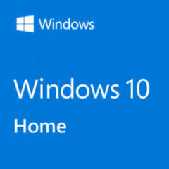
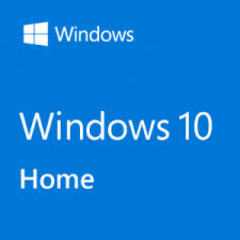

Licencia Windows 10 Home
Es un entorno conocido y fácil de usar. Windows 10 se creó para combinar lo mejor de Windows 7 y 8.1 en una experiencia del usuario natural que se ajusta de forma dinámica a la forma en que trabaja. Con el Modo tableta*, independientemente de si trabaja en una tableta, un portátil o un dispositivo 2 en 1, verá cómo Windows 10 puede ofrecer una experiencia de escritorio, móvil y compatible con funciones táctiles, todo en un sistema operativo.
Caracteristicas
Tener un mayor numero de actualizaciones de Windows ya sea, para mejorar la calidad de alguna app de windows, tal como Windows Defender etc, se tiene un mejor acceso flexible a Windows Enterprise.
 
